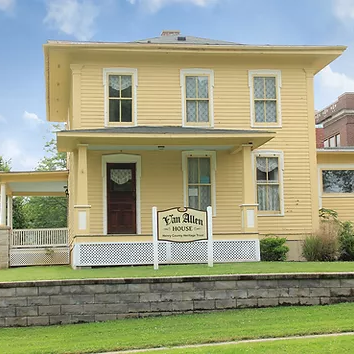
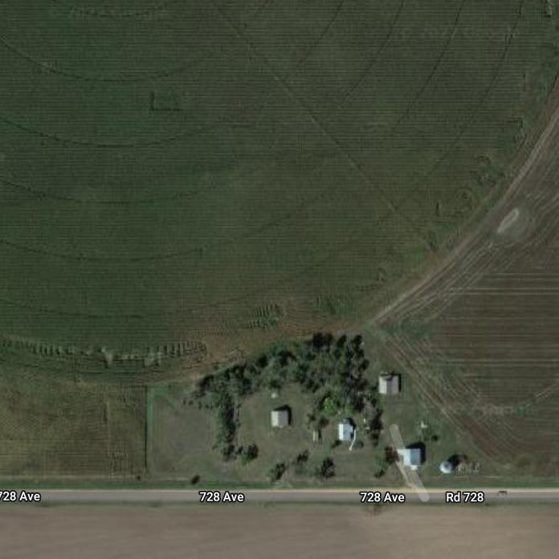
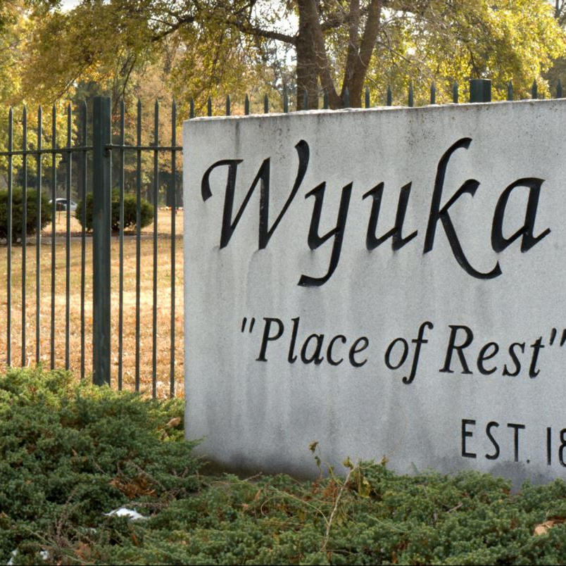

Gathering in remembrance
Celebration of Life
Three gatherings. A lifetime of memories.
These gatherings took place in 2022. The original event information is preserved here for family and friends.
“Please join me in remembering my father, at one or more of the events below.”
— Ryan
May072022
Mt. Pleasant, Iowa
Celebration of Life
· 1–4 p.m.
Open house, come and go anytime.
Van Allen House Heritage Center403 West Madison Street
Mt. Pleasant, Iowa 52641
Organized by Kate McNair.

July042022
Imperial, Nebraska
Scattering of Ashes
- 10 a.m.
- Scattering of ashes at McNair Farms.
Optional and brief. - 11:30 a.m.
- Lunch at Eagles Club.
Organized by Kelli Major.

July082022
Lincoln, Nebraska
Cemetery Burial
· 11 a.m.
Graveside service.
Wyuka Cemetery3600 “O” Street
Lincoln, Nebraska 68510
Organized by Ryan McNair.
